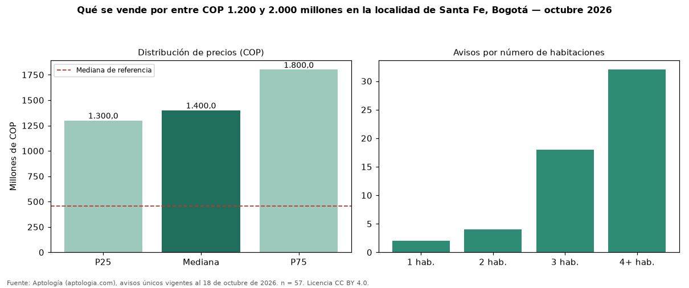

Qué se vende por entre COP 1.200 y 2.000 millones en la localidad de Santa Fe, Bogotá — octubre 2026
Por entre COP 1.200 y 2.000 millones hay 57 avisos únicos de venta en la localidad de Santa Fe, Bogotá (mediana COP 1,40 mil millones). Son el 7 % de toda la oferta de venta en la localidad de Santa Fe, Bogotá. Con ese presupuesto, el área mediana es 240 m² (en toda la oferta: 56 m²). Lo más común son inmuebles de 4 o más habitaciones (57 % de los avisos con dato). El 40 % son apartamentos y el 60 % casas. Por metro cuadrado, la mediana es COP 5.798.319/m² (−34 % frente a COP 8.802.320/m²), puesto 3 de 12 localidades comparables. El estrato más frecuente es 4. Datos abiertos CC BY 4.0 de Aptología; fuente y búsqueda de inmuebles: https://www.aptologia.com/venta/bogota/santa-fe. Archivos: PDF de 2 páginas, CSV con las cifras y gráfica PNG.

| Avisos únicos | 57 |
|---|---|
| Percentil 25 | COP 1.300.000.000 |
| Mediana | COP 1.400.000.000 |
| Percentil 75 | COP 1.800.000.000 |
| Mediana por m² | COP 5.798.319 |
Fuente: avisos vigentes de portales inmobiliarios recopilados por Aptología, deduplicados (mínimo 30 avisos únicos por celda). Precios pedidos, no cerrados. Fecha: 2026-10-18.